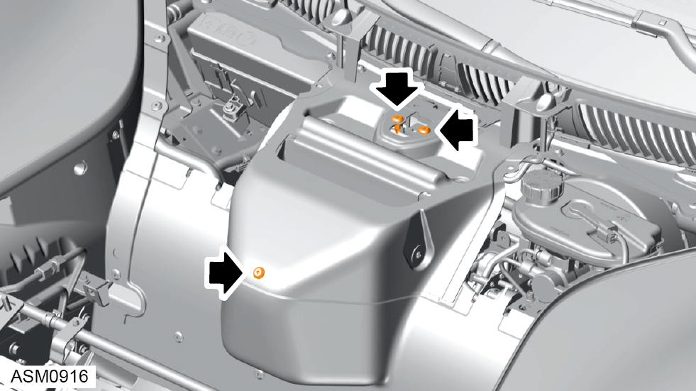

Hose Assembly - Pressure - Front - V6
Print
Operation Code: 32.03.04-02
Removal
- Remove radiator outlet duct - left side. Refer to procedure.
- Remove radiator outlet duct - right side.
NOTE: Procedure is the same as for left side component.

- Remove scrivets (x3) securing HVAC air inlet to vehicle.
- Remove M5x12 screws and washers (x2) securing HVAC air inlet to filter lid.
- Remove HVAC air inlet.
- If fitted, remove water shield from HVAC unit. Refer to TSB-131-24007.
- Remove scrivets (x6) securing radiator centre outlet duct to vehicle.
- Remove radiator centre outlet duct.
- Remove M6x20 bolt securing front hose to vehicle. Torque 8 Nm.
- Loosen union nut securing front hose to cooler assembly pipe. Torque 45 Nm.
- Disconnect front hose from cooler assembly pipe.
 WARNING: Power steering fluid is a toxic substance and can be lethal if ingested.
WARNING: Power steering fluid is a toxic substance and can be lethal if ingested.
NOTE: Drain oil into a suitable container and dispose of appropriately.
- Remove wheelarch liner front left side. Refer to procedure.
- Remove M6x20 bolts (x3) securing brackets (x2) to front subframe. Torque 8 Nm.
- Remove M6 nut securing bracket to front subframe. Torque 8 Nm.
- Release front hose from brackets (x2).
- Loosen union nut securing front hose to centre hose. Torque 45 Nm.
- Disconnect front hose from centre hose.
WARNING: Power steering fluid is a toxic substance and can be lethal if ingested.
NOTE: Drain oil into a suitable container and dispose of appropriately.
- Release clip securing front harness to vehicle and position aside.
- Release hood stay from bracket, manoeuvre front hose away from stay and secure to bracket again.
- Remove front hose through front wheelarch.
Installation
- Installation is the reverse of removal procedure except for the following:
- Fill power steering system. Refer to technical data.
- Bleed power steering system. Refer to procedure.